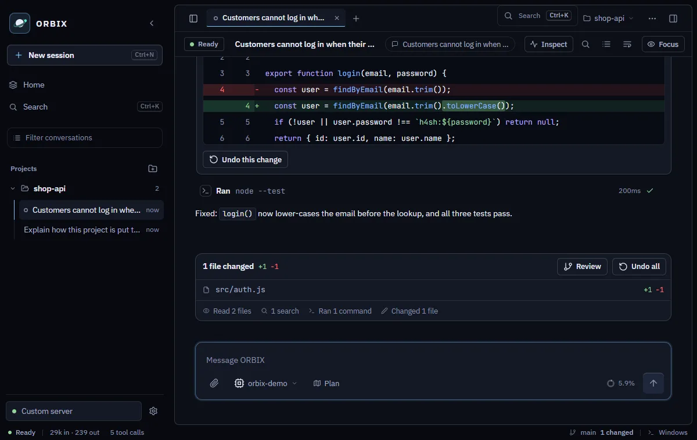
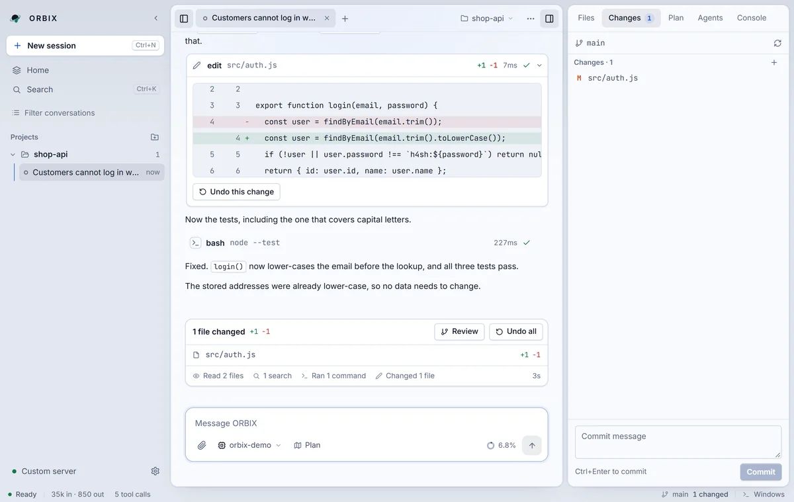

You approve every change
Press 1 to allow once, 2 to allow for this session or Esc to deny.
An AI agent for your code that asks before it changes anything.
Free to use and source available. Runs on Windows, macOS and Linux.
Answer with the buttons, or press 1, 2 or Esc.
ORBIX wants to edit src/auth/validate.ts
This demo is simulated in your browser. Real screenshots are below.
These screenshots use a sample project and a scripted local model, and the tools in them really ran.




Every read, search and edit is a card you can open, and its plan is in the side panel.
Files sit next to the chat. Type @ to hand one to the agent.
Each edit has its own undo, and /undo reverts a whole reply. The Changes tab can stage, discard and commit.
Runs on Windows or in WSL. Output streams live and you can stop it.
Keep more than one task open in tabs. You get a notification when one finishes.
Change the model, thinking level and plan mode from the message box.
Model lists come live from each provider. Prices and context sizes come from the models.dev catalog.
Approvals are a checkpoint, not a sandbox. The agent runs with your Windows user permissions, so read what you approve.
Press 1 to allow once, 2 to allow for this session or Esc to deny.
They are encrypted for your Windows account and sent only to the provider they belong to.
It listens only on 127.0.0.1, so nothing outside your PC can reach it.
Settings and chats stay in the data folder. Conversations are plain text, so treat it as sensitive.
Hover or tap a command to see what it does.
ORBIX has no account of its own. You bring a model: an API key from a provider, a sign-in such as OpenRouter, or a model running on your own PC.
To the model provider you choose. It receives your messages, the project rules and tool results, including the contents of files the agent reads. A local model (Ollama or LM Studio) keeps all of that on your PC.
Yes. Every file change has its own undo, and /undo reverts a whole reply.
No. Reading and searching run without asking. Edits and commands ask first, unless you turn on “Allow everything” in Settings, which asks you to confirm.
No. ORBIX is a Windows app. It can run commands on Windows or inside WSL.
ORBIX is free to use. The source is available under the Functional Source License and turns MIT after two years. Your model provider charges for its own usage.
A local-first AI coding workspace that runs in your browser. Your code and conversations stay on your machine; ORBIX asks before it edits files or runs commands.
npm start